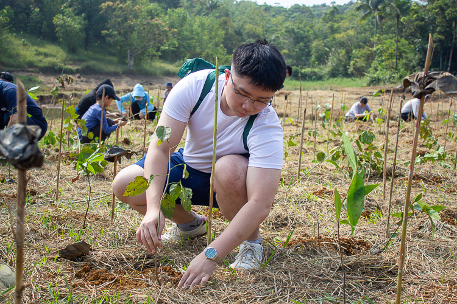
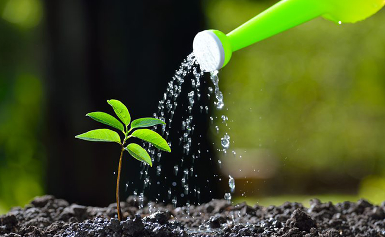
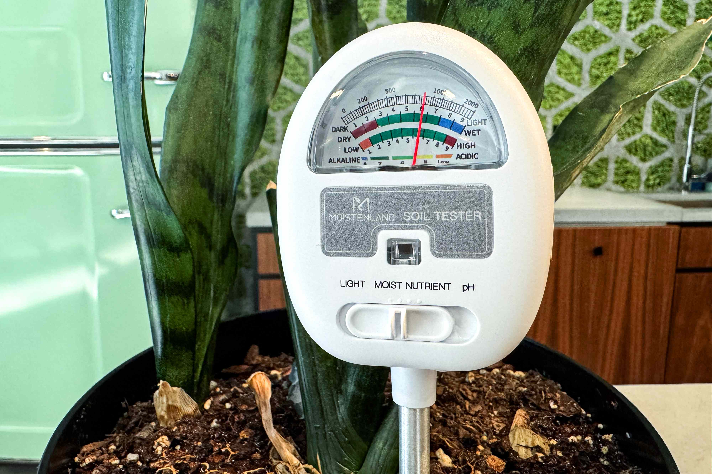
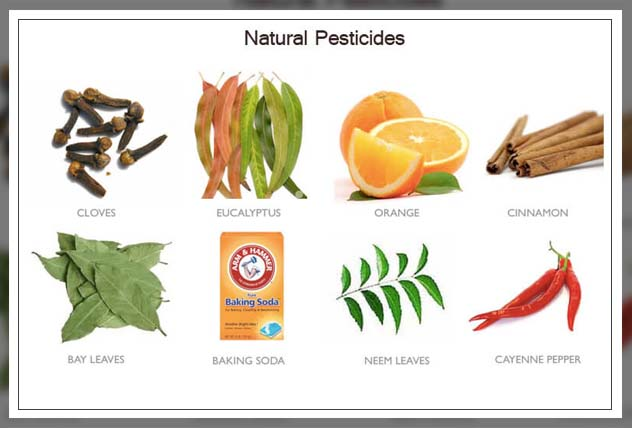
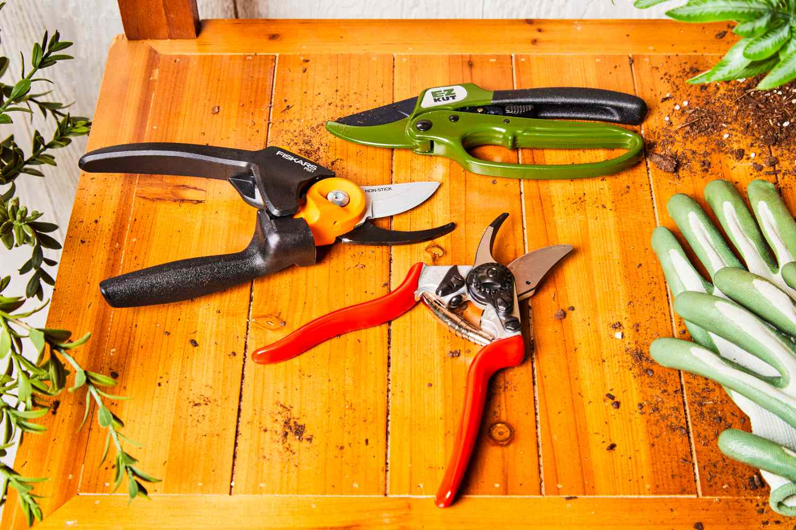
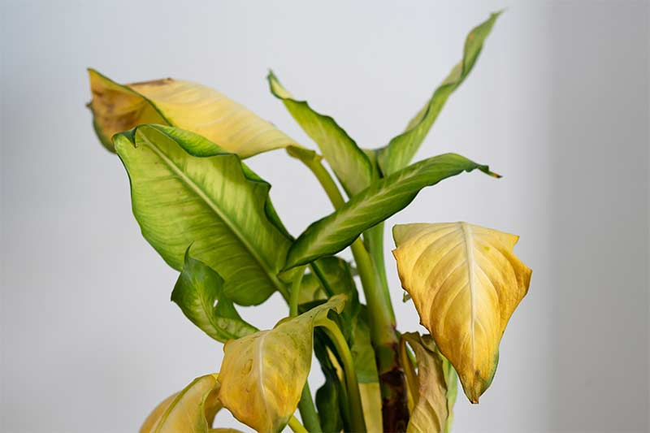
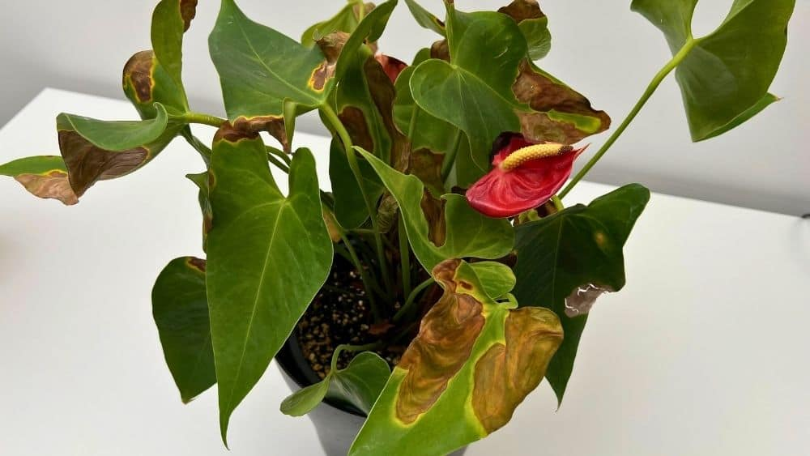
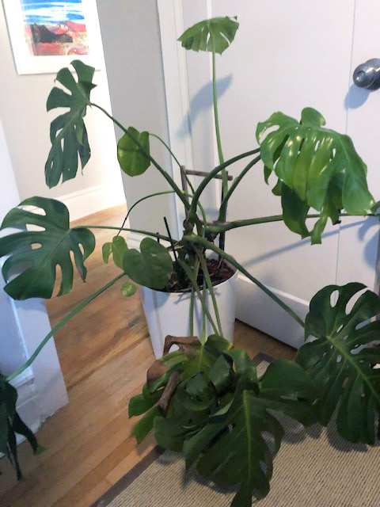
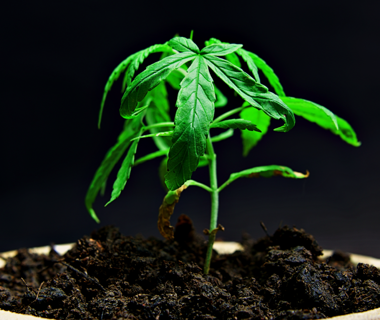

Features & Guides
Everything you need to know about urban planting, from choosing the right greenery to maintaining it year-round.
Plant Guide
Discover plants that thrive in your local environment, specifically tailored for hot and dry climates.
Drought-Resistant Plants
Explore a comprehensive list of succulents, cacti, and native shrubs that require minimal watering and thrive in dry heat.
Basic Plant Info
Learn about soil requirements, sunlight needs, and the optimal conditions for maintaining a healthy urban garden.
Ecological Benefits
Understand how urban plants contribute to air purification, temperature regulation, and local biodiversity in cities.
Planting Instructions
Comprehensive step-by-step guides on how to plant trees and smaller plants successfully.
Getting Started: Materials Needed
- High-Quality Soil: Look for loam soil with good drainage. Can be purchased at local garden centers or online.
- Tools: Hand trowel, gardening gloves, and a watering can.
- Fertilizer: Organic compost or slow-release fertilizer pellets.
Step-by-Step Planting
- Preparation: Choose a spot with appropriate sunlight for your plant type. Dig a hole twice as wide as the root ball, but no deeper.
- Loosening Roots: Gently massage the root ball to encourage outward growth.
- Positioning: Place the plant in the center of the hole. Ensure the base of the stem is level with the surrounding soil.
- Backfilling: Fill the hole with a mix of native soil and compost. Tamp down gently to remove air pockets.
- Watering: Water thoroughly immediately after planting to settle the soil. Add a 2-inch layer of mulch around the base to retain moisture.

Strategic Preparation
Site Assessment: Before digging, observe sunlight patterns for a full day. Most
"full sun" plants require at least 6 hours of direct light.
Check for overhead power lines or underground utilities by calling local locators.
Soil Vitality: Perform a drainage test by digging a 12-inch hole and filling it
with water;
if it doesn't drain in 12 hours, you'll need to amend the soil or choose a different spot.
Pro Tip: Gather a sturdy spade, a wheelbarrow for mixing soil, and high-quality organic compost to boost initial nutrient uptake.
Precision Planting
The Perfect Hole: Dig a "saucer-shaped" hole that is 2 to 3 times wider than
the root ball,
but no deeper. This wide, shallow approach ensures the structural roots can easily penetrate the
surrounding soil.
Root Management: Carefully remove the container or burlap. If roots are
"circling" the pot,
gently tease them outward or make shallow vertical nicks to encourage outward growth.
Ensure the root flare the point where the trunk widens is visible above the soil line.
Pro Tip: Avoid adding heavy fertilizers directly into the hole, as this can burn tender new roots; stick to compost-rich backfill.
Long-term Establishment
Hydration Strategy: Water immediately and deeply to settle the soil and
eliminate air pockets.
For the first few weeks, focus on deep, infrequent watering rather than light daily sprinkles to
encourage deep root systems.
Surface Protection: Apply a 3-inch layer of organic mulch (like wood chips or
bark) in a wide circle around the base.
Ensure the mulch does not touch the bark, as trapped moisture can lead to fungal rot.
Pro Tip: Only use stakes if the tree is top-heavy or in a high-wind corridor; allowing the trunk to sway slightly actually helps it grow stronger over time.
Plant Care Tips
Ensure your greenery thrives year-round with our advanced maintenance guides and troubleshooting tips.
Essential Watering Guide

Proper watering is one of the most important parts of plant care, and it is also one of the
easiest things to get wrong.
A good rule of thumb is to check the top inch of soil before watering. If that layer feels dry
to the touch, your plant
is usually ready for a drink. If it still feels moist, wait a little longer. Overwatering can be
just as harmful as
underwatering because roots need both water and air to stay healthy.
When you water, do it slowly and thoroughly at the base of the plant so the moisture reaches the
root zone. Try to avoid
wetting the leaves unnecessarily, especially for plants that are prone to fungal problems. It is
also a good idea to water
in the morning when possible, since this gives the plant time to absorb moisture before cooler
evening temperatures set in.
Keep in mind that watering needs can change depending on the season, the size of the pot, the type of soil, and how much sunlight the plant receives. Plants in brighter, warmer spaces usually dry out faster, while plants in larger pots or lower-light areas may need less frequent watering. The best approach is to check the soil regularly instead of following a strict schedule.
Where to Find Care Tools
Having the right tools makes plant care easier, cleaner, and more effective. You do not need a large collection to get started, but a few reliable essentials can make a big difference in maintaining healthy plants.
- Pruning Shears: Essential for making clean cuts when trimming dead leaves, shaping growth, or removing damaged stems. A sharp pair helps reduce stress on the plant and lowers the chance of infection. You can find them at local hardware stores, garden centers, and online shops.
-

Moisture Meters: A useful tool for beginners and anyone who wants a clearer idea of when to water. Instead of guessing, a moisture meter gives you a quick reading of the soil’s condition. These are widely available on e-commerce platforms and in many garden supply stores. -

Organic Pest Control: Products like neem oil or insecticidal soap can help manage common pests without using harsh chemicals. They are often sold at garden centers, nurseries, and online retailers. Always read the label carefully and test on a small area first. -
 Gloves and a Small Trowel: Helpful for repotting, mixing soil, and handling
messy tasks more comfortably.
These are inexpensive tools that make routine maintenance much easier.
Gloves and a Small Trowel: Helpful for repotting, mixing soil, and handling
messy tasks more comfortably.
These are inexpensive tools that make routine maintenance much easier.

Troubleshooting Common Issues
Even with consistent care, plants can occasionally show signs of stress due to changes in their environment, watering habits, or light conditions. These issues are very common, especially for beginners, and they do not mean your plant is beyond saving. In most cases, plants will recover quickly once the problem is identified and corrected.
The most important skill in plant care is observation. Pay attention to changes in leaf color, texture, and growth patterns. Small signs like slight discoloration or drooping can help you catch problems early before they become more serious. By adjusting your care routine based on what your plant is telling you, you can maintain healthier and more resilient plants over time.
-

Yellowing Leaves: This is one of the most common issues and is often caused by overwatering or poor drainage. When roots sit in water for too long, they can begin to rot, preventing the plant from absorbing nutrients properly. Always check the soil before watering and ensure your pot has proper drainage holes. -

Brown, Crispy Edges: This usually indicates that the plant is not getting enough water, is exposed to dry air, or is receiving too much direct sunlight. Increasing humidity, adjusting watering, or moving the plant to a slightly shaded area can help resolve this problem. -

Leggy Growth: When a plant becomes tall and stretched with wide gaps between leaves, it is typically searching for more light. This happens in low-light environments. Moving the plant closer to a window or rotating it regularly can encourage fuller, more balanced growth. -
 Drooping Leaves: Drooping can be confusing because it may result from both
overwatering
and underwatering. The best way to diagnose the issue is to check the soil moisture. Dry
soil indicates
the plant needs water, while soggy soil suggests you should reduce watering and improve
drainage.
Drooping Leaves: Drooping can be confusing because it may result from both
overwatering
and underwatering. The best way to diagnose the issue is to check the soil moisture. Dry
soil indicates
the plant needs water, while soggy soil suggests you should reduce watering and improve
drainage.
-

Slow or Stunted Growth: If your plant is not growing as expected, it may lack sufficient light, nutrients, or space for its roots. Consider moving it to a brighter location, feeding it with a balanced fertilizer, or repotting it into a slightly larger container to encourage new growth.
Video Guides & Practical Gardening Resources
Explore step-by-step video tutorials and expert-backed resources designed to help your plants thrive in any season. From proper watering techniques and soil management to pruning, pest control, and plant health troubleshooting, these guides provide practical, real-world knowledge you can apply directly to your garden. Whether you're a beginner or an experienced grower, our resources help you build healthier, more resilient greenery year-round.
Watering Guides
Learn precise watering schedules for different plant types to prevent overwatering or drought stress.
Maintenance & Pruning
Learn how to safely prune dead branches and encourage healthy growth.
Problems & Solutions
Identify pests early and treat them using eco-friendly methods.